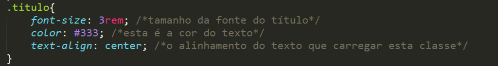
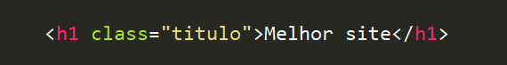
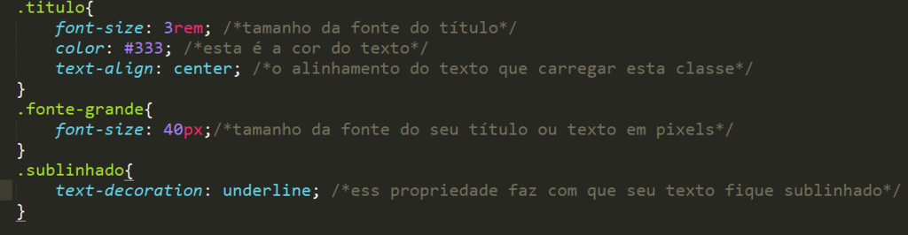
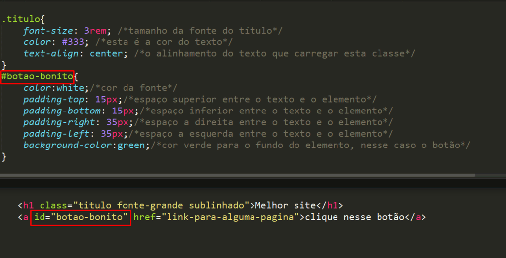

O que é CSS
CSS é chamado de linguagem Cascading Style Sheet e é usado para estilizar elementos escritos em uma linguagem de marcação como HTML. O CSS separa o conteúdo da representação visual do site. Pense na decoração da sua página. Utilizando o CSS é possível alterar a cor do texto e do fundo, fonte e espaçamento entre parágrafos. Também pode criar tabelas, usar variações de layouts, ajustar imagens para suas respectivas telas e assim por diante.
CSS foi desenvolvido pelo W3C (World Wide Web Consortium) em 1996, por uma razão bem simples. O HTML não foi projetado para ter tags que ajudariam a formatar a página. Você deveria apenas escrever a marcação para o site.
Tags como <font> foram introduzidas na versão 3.2 do HTML e causaram muitos problemas para os desenvolvedores. Como os sites tinham diferentes fontes, cores e estilos, era um processo longo, doloroso e caro para reescrever o código. Assim, o CSS foi criado pelo W3C para resolver este problema.
A relação entre HTML e CSS é bem forte. Como o HTML é uma linguagem de marcação (o alicerce de um site) e o CSS é focado no estilo (toda a estética de um site), eles andam juntos.
CSS não é tecnicamente uma necessidade, mas provavelmente você não gostaria de olhar para um site que usa apenas HTML, pois isso pareceria completamente abandonado.
Vantagens do CSS
A diferença entre um site que implementa CSS e outro que não o usa é gigantesca e notável.
Você já deve ter visto um site que não carrega completamente ou tem um plano de fundo branco com texto azul e preto. Isso significa que a parte CSS do site não foi carregada corretamente ou não existe.
Antes de usar CSS, toda a estilização tinha que ser incluída na marcação HTML. Isso significa que você deveria descrever separadamente todo o plano de fundo, as cores das fontes, os alinhamentos, etc.
Mas o CSS permite que você estilize tudo em um arquivo diferente, criando assim o estilo separadamente. E, mais tarde, faça integração do arquivo CSS na parte superior da marcação HTML. Isso mantém a marcação HTML limpa e fácil de manter.
Resumindo, com o CSS você não precisa mais escrever repetidamente como os elementos individuais se parecem. Isso economiza tempo, encurta o código e diminui a chance de erros.
O CSS permite que você tenha vários estilos em uma página HTML, tornando as possibilidades de personalização quase infinitas. Hoje em dia, isso está se tornando mais uma necessidade do que um simples recurso.
Como CSS Funciona
O CSS é uma ferramenta muito potente que possibilita criar diversas funcionalidades ao invés de usar JavaScript ou outra linguagem mais pesada. Se usado com moderação, CSS pode viabilizar uma ótima experiência ao desenvolvedor e usuários das páginas web.
Com o Cascading Style Sheets é possível criar animações complexas, criar efeitos com uso de parallax, que faz parecer que a imagem de fundo tem uma profundidade diferente um dos outros, criar sites interativos e também jogos com HTML5 e CSS3.
O CSS usa uma sintaxe simples baseada em inglês com um conjunto de regras que o governam. Como mencionamos anteriormente, o HTML nunca teve a intenção de usar elementos de estilo, apenas a marcação da página. Foi criado para descrever apenas o conteúdo. Por exemplo: <p>Este é um parágrafo.</p>.
Mas como você estiliza o parágrafo? A estrutura da sintaxe CSS é bem simples. Tem um seletor e um bloco de declaração. Você seleciona um elemento e depois declara o que deseja fazer com ele. Bastante simples, certo?
Mas tem algumas regras que você precisa saber. Isso também é simples, não se preocupe.
O seletor aponta para o elemento HTML que você deseja estilizar. O bloco de declaração contém uma ou mais declarações separadas por ponto e vírgula.
Cada declaração inclui um nome de propriedade CSS e um valor, separados por dois pontos. Uma declaração CSS sempre termina com um ponto-e-vírgula e os blocos de declaração são cercados por chaves.
Vamos ver um exemplo:
Todos os elementos <p> serão estilizados e serão coloridos de azul e negrito.
<style>
p {
color: blue;
text-weight: bold;
}
</style>
Em outro exemplo, todos os elementos <p> serão centralizados, com tamanho 16x e de cor pink.
<style>
p {
text-align: center;
font-size: 16px;
color: pink;
}
</style>
Anatomia de um comando CSS
O CSS estipula regras para o arquivo em html. Com cada regra é possível estilizar o conteúdo todo ou somente determinados elementos. Por isso entenda, um comando básico é composto por seletor e declarações, que contém propriedade e valor.
SELETOR {PROPRIEDADE: VALOR}
A sintaxe do CSS é muito simples de aprender. O seletor seleciona quais elementos em html receberão a propriedade. Pode ser p (parágrafo) ou o body (corpo da sua página). Já a propriedade pode ser a cor ou algo mais específico como cor do fundo (background). E por último o valor, que determina o valor da propriedade.
Vamos simular um exemplo. Digamos que o objetivo é mudar a fonte de uma tag h1. Para isso podemos usar h1 {font-size: 20px;}
- h1 – é o seletor. Neste caso selecionamos o h1.
- font-size – é a declaração que contém a propriedade (font-size) e o valor é (20px).
Estilos CSS Interno, Externo e Inline
Vamos começar com o estilo interno. Estilos CSS feitos desta forma são carregados cada vez que um site é atualizado, o que pode aumentar o tempo de carregamento. Além disso, você não poderá usar o mesmo estilo CSS em várias páginas, pois está contido em uma única página. Mas a vantagem disso é que ter tudo em uma página facilita o compartilhamento do modelo para uma visualização.
O método externo pode ser o mais conveniente. Tudo é feito externamente em um arquivo .css. Isso significa que você pode fazer todo o estilo em um arquivo separado e aplicar o CSS a qualquer página desejada. O estilo externo também pode melhorar o tempo de carregamento.
Por fim, tem também o estilo Inline do CSS. Inline trabalha com elementos específicos que possuem a tag <style>. Cada componente deve ser estilizado, por isso talvez não seja o melhor ou o mais rápido para lidar com CSS. Mas pode ser útil, por exemplo, para alterar um único elemento, visualizar rapidamente as alterações ou se não tiver acesso aos arquivos CSS.
Para mais informações sobre os diferentes estilos de CSS, veja o artigo completo aqui.
Como Adicionar o CSS em HTML
Primeiro vamos dentro da tag <body> e acrensetamos com a tag link conforme mostrado abaixo.
<!DOCTYPE html>
<html>
<head>
<link rel="stylesheet" href="nome-da-pasta.css">
</head>
<body>
</body>
</html>
Elementos Básicos do CSS
Os elementos são tags do HTML, #id e .classe.
1.Tags HTML
body
h1
h2
h3
h4
h5
h6
p
2. Classes CSS
Criar e usar uma classe CSS é simples. No documento CSS basta colocar .nome-da-classe-que-deseja . Abaixo criamos a classe título:
Note que existe um ponto (.) antes do nome da classe. Isso faz com que o CSS entenda que se está criando uma classe para ser usada no HTML.
Para se adicionar essa classe que criamos dentro do CSS, basta que na tag HTML tenha o parâmetro class=””.
Observação: dentro das aspas, não precisa usar o ponto (.) antes da classe pois o nome class no HTML já avisa para o CSS que é para ele buscar pelo nome da classe com “.”
Lembrando que uma tag HTML, como h1 ou qualquer outra, pode ter mais de uma classe, basta separá-las com espaço como mostra no exemplo abaixo:
<h1 class=”titulo fonte-grande sublinhado”>Melhor site</h1>
Nesta tag foram usadas três classes: “titulo”, “fonte-grande” e “sublinhado”.
Mas para que todas estas classes tenham efeito é preciso criá-las no CSS. Veja como criamos estas classes:
Quando abrirmos nosso HTML o título deverá ficar assim:

3- Criando IDs CSS:
O uso dos IDs em CSS é parecido com as classes, mas as principais diferenças são que os ids são identificados com # e só podem ser usados um id por tag html. Para adicionar um ID ao HTML, adicione como parâmetro id=””.
Veja que a quando usamos no HTML, também excluímos o # do id da mesma forma que excluímos o . da classe.
Dessa forma, o botão deverá ficar assim:
Conclusão
O CSS é a melhor forma de estilizar seu site, e falamos da diferença de style em Interno, Externo e Inline.